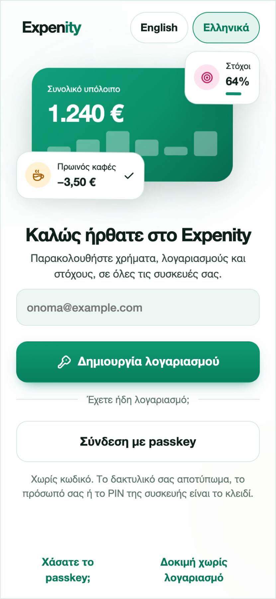
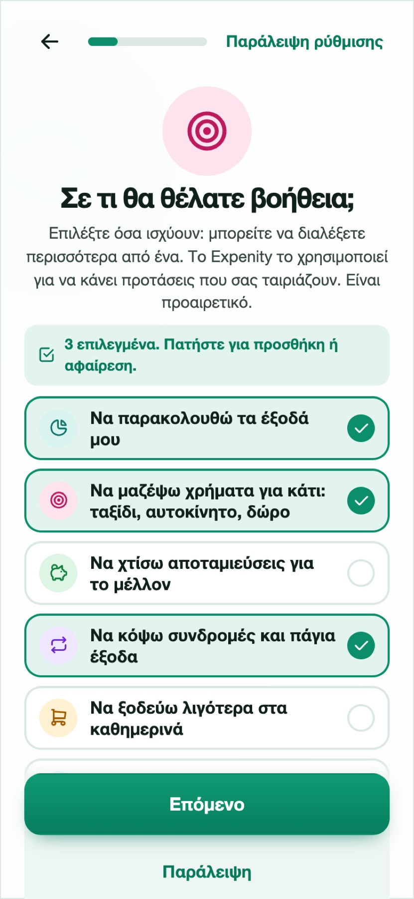
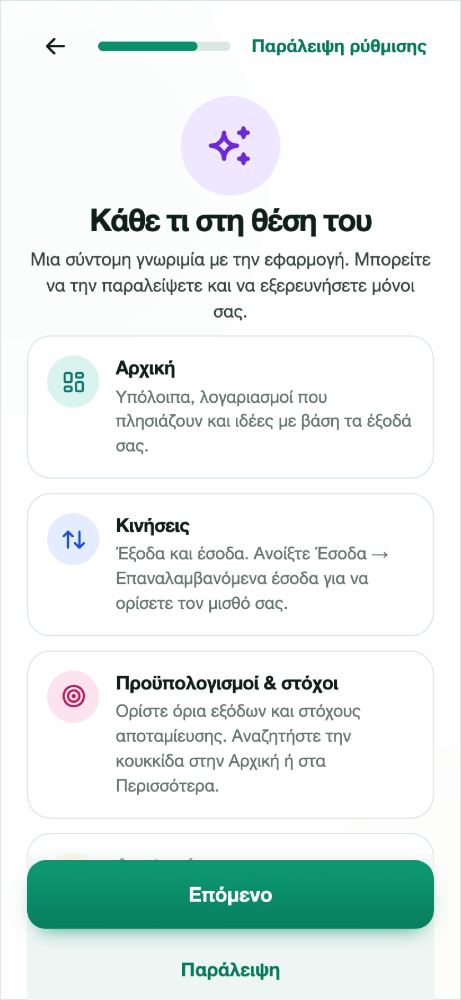

Ξεκινώντας
Το Expenity κρατά τα χρήματά σας, τους λογαριασμούς και τους στόχους σας σε ένα μέρος, σε όλες τις συσκευές σας: iPhone, iPad, Android, Windows, Mac και Linux, χωρίς να κατεβάσετε τίποτα από κατάστημα. Ο οδηγός αυτός χρειάζεται περίπου πέντε λεπτά και κάθε βήμα μετά τον λογαριασμό μπορεί να παραλειφθεί.
1. Δημιουργήστε λογαριασμό (ή συνδεθείτε)#
Ανοίξτε την εφαρμογή στο expenity.github.io/expenity/app/?lang=el. Η πρώτη οθόνη σας ζητά να δημιουργήσετε λογαριασμό ή να συνδεθείτε. Χρησιμοποιείτε passkey, δηλαδή το δακτυλικό σας αποτύπωμα, το πρόσωπό σας ή το PIN της συσκευής, οπότε δεν υπάρχει κωδικός να θυμάστε ή να χάσετε. Γράψτε το email σας, πατήστε Δημιουργία λογαριασμού και επιβεβαιώστε στη συσκευή σας.

Μετά το Expenity εμφανίζει δέκα κωδικούς ανάκτησης. Φυλάξτε τους σε ασφαλές μέρος. Είναι ο τρόπος να μπείτε ξανά αν χάσετε τα passkeys σας και εμφανίζονται μόνο μία φορά. Δείτε το Λογαριασμός και συγχρονισμός.
Δεν είστε έτοιμοι για λογαριασμό; Πατήστε Δοκιμή χωρίς λογαριασμό. Τα δεδομένα σας θα μένουν τότε μόνο σε αυτό το πρόγραμμα περιήγησης και μπορείτε να δημιουργήσετε λογαριασμό αργότερα από τα Περισσότερα.
2. Προσθέστε το Expenity στην αρχική οθόνη#
Η επόμενη οθόνη δείχνει, με μια μικρή κίνηση, πώς να προσθέσετε το Expenity στην αρχική οθόνη σε iPhone, Android ή υπολογιστή, ώστε να ανοίγει σαν εφαρμογή. Διαλέξτε τη συσκευή σας, ακολουθήστε τα τέσσερα βήματα και πατήστε Το πρόσθεσα, ή Όχι τώρα. Περισσότερα στο Εγκατάσταση στη συσκευή σας.

3. Ρυθμίστε το#
Μια σύντομη ρύθμιση κάνει λίγες ερωτήσεις. Κάθε μία μπορεί να παραλειφθεί και μπορείτε να αλλάξετε κάθε απάντηση αργότερα.
- Το όνομά σας, για τον χαιρετισμό.
- Το βασικό σας νόμισμα. Τα σύνολα και οι αναφορές το χρησιμοποιούν.
- Σε τι θέλετε βοήθεια, όπως να παρακολουθείτε τα έξοδά σας, να μαζέψετε χρήματα για ένα ταξίδι ή να κόψετε συνδρομές. Μπορείτε να διαλέξετε περισσότερα από ένα και ένα είναι ήδη επιλεγμένο για να φαίνεται πώς. Το Expenity το χρησιμοποιεί για να προτείνει πράγματα που σας ταιριάζουν. Δείτε το Προϋπολογισμοί, στόχοι και έσοδα.
- Τους πρώτους στόχους σας, αν επιλέξατε να αποταμιεύσετε για κάτι. Διαλέξτε όσες ιδέες θέλετε (ταξίδι, αυτοκίνητο, δώρο, σπίτι, αποθεματικό) ή προσθέστε δικές σας, με ποσό στόχου η καθεμία.
- Τα πορτοφόλια σας: μετρητά, τραπεζικός λογαριασμός, κάρτα, αποταμίευση, με όσα έχει το καθένα.
- Πόσα θέλετε να βλέπετε: Basic, Pro ή Advanced, ή δικό σας πακέτο αργότερα. Δείτε Λειτουργίες και πακέτα.
- Το ημερήσιο ποσό σας: αφήστε το Expenity να υπολογίσει πόσα μπορείτε να ξοδέψετε σήμερα ή ορίστε ημερήσιο, εβδομαδιαίο ή μηνιαίο στόχο. Δείτε Ημερήσιο ποσό, στόχοι και σερί.
- Την εμφάνιση: ένα θέμα και αν τα κινούμενα εφέ είναι ενεργά, και, στο κινητό, μια σύντομη κινούμενη συμβουλή για το σύρσιμο γραμμών. Δείτε το Θέματα και κινούμενα εφέ.
- Ειδοποιήσεις: ενεργοποιήστε την καθημερινή σύνοψη των λογαριασμών και τις ειδοποιήσεις ενημέρωσης, ακόμα και όταν το Expenity είναι κλειστό (με λογαριασμό· το Όχι τώρα το παραλείπει). Δείτε τις Υπενθυμίσεις.
- Σύντομα κινούμενα μαθήματα: σάρωση απόδειξης, προσθήκη εγγραφής με μία πρόταση, μερικά χρήσιμα extra, το εικονίδιο βοήθειας και, στο κινητό, σύρσιμο γραμμών. Δείτε Οδηγοί και βοήθεια.

Μέχρι να ολοκληρωθεί ή να παραλειφθεί η ρύθμιση, η εφαρμογή δεν σας αφήνει να προσθέσετε δεδομένα, ώστε τίποτα να μην καταλήξει σε πορτοφόλι που δεν διαλέξατε.
Παράδειγμα από την καθημερινότητα
Η Άννα διαλέγει το Basic για να ξεκινήσει ήσυχα και ορίζει ημερήσιο στόχο 15 €. Η Αρχική δείχνει πλέον πόσα μπορεί ακόμη να ξοδέψει σήμερα.
4. Προσθέστε το πρώτο σας έξοδο#
Πατήστε το πράσινο κουμπί +, επιλέξτε Έξοδο, γράψτε το ποσό στο πληκτρολόγιο, προσθέστε περιγραφή, διαλέξτε κατηγορία και πορτοφόλι και πατήστε το σημάδι ✓. Περισσότερα για την προσθήκη χρημάτων.

Γνωρίστε την εφαρμογή#
- Αρχική: το συνολικό υπόλοιπο, έσοδα και έξοδα του μήνα, ιδέες για εσάς, πορτοφόλια, τι έρχεται σύντομα.
- Κινήσεις: όλες οι κινήσεις ανά μήνα, με αναζήτηση και φίλτρα.
- Λογαριασμοί: τι έρχεται, ως λίστα ή ημερολόγιο.
- Αναφορές: γραφήματα και πίνακες. Δείτε τις Αναφορές.
- Πλάνο (προϋπολογισμοί και στόχοι): όρια εξόδων και στόχοι αποταμίευσης, σε δική του καρτέλα στο κάτω μέρος (και στην πλαϊνή μπάρα σε tablet και υπολογιστή).
- Περισσότερα: πορτοφόλια, κατηγορίες, υπενθυμίσεις, αντίγραφο, θέματα, ο λογαριασμός σας.
Πού να πάτε μετά#
- Προσθήκη εξόδων, εσόδων και λογαριασμών
- Πορτοφόλια και νομίσματα
- Προϋπολογισμοί, στόχοι και έσοδα
- Κοινά πορτοφόλια
Ξενάγηση με τον δικό σας ρυθμό#
Μετά την επιλογή εμφάνισης, μια κινούμενη ξενάγηση παρουσιάζει Αρχική, Κινήσεις, Προϋπολογισμούς & στόχους και Αναφορές. Στις Κινήσεις → Έσοδα → Επαναλαμβανόμενα έσοδα ορίζετε τον μισθό σας. Οι Ιδέες παραμένουν στην Αρχική. Το ευρώ είναι το αρχικό νόμισμα.
Στο κινητό, ο οδηγός συρσίματος δείχνει πώς εμφανίζονται οι ενέργειες μιας γραμμής. Το σύρσιμο από μόνο του δεν καταχωρίζει πληρωμές ούτε διαγράφει δεδομένα. Όλα τα προαιρετικά βήματα παραλείπονται. Λογαριασμοί που έχουν ολοκληρώσει τη ρύθμιση επιστρέφουν στα δεδομένα τους μετά τη σύνδεση. Τα εφέ ακολουθούν τη ρύθμιση κινήσεων και την προτίμηση μειωμένης κίνησης της συσκευής.
Οι ενσωματωμένες ετικέτες πορτοφολιών και κατηγοριών ακολουθούν τη γλώσσα της εφαρμογής. Ονόματα που γράφετε εσείς παραμένουν όπως τα γράψατε.

Η βοήθεια είναι πάντα ένα πάτημα μακριά#
Ψάξτε το παλλόμενο ; στο πάνω μέρος μιας οθόνης: ανοίγει έναν σύντομο κινούμενο οδηγό σε αναδυόμενο παράθυρο χωρίς να σας απομακρύνει από ό,τι κάνετε. Όλοι οι οδηγοί βρίσκονται στο Περισσότερα → Βοήθεια → Οδηγοί και δίπλα τους η Επικοινωνία. Δείτε Οδηγοί και βοήθεια.
Χρειάζεστε ακόμα βοήθεια; Δείτε τις FAQ, ή ρωτήστε στο GitHub.